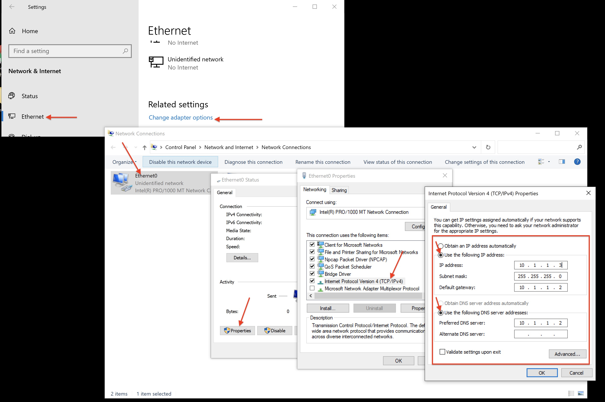
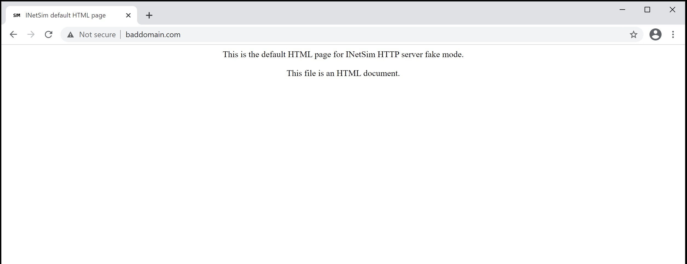

Malware Analysis Series - Part 1, Setting Up a Basic Malware Analysis Virtual Lab
Introduction:
Since joining the Cyber Security and Intelligence community in 2016, I’ve always had a strong interest in malware analysis. The process of breaking something down, looking at its individual parts, testing hypotheses as to what its capabilities are. This is something that has always drawn me to the field. Its also a field that is extremely new to me. I’ve only just started to learn how to setup a proper lab and all the various techniques that exist to breakdown and understand malware. Because of that, I wanted to start a blog series to document my process for others, in hopes that my journey will make it easier for anyone trying to get started in the field.
What to Expect from this Post:
My aim for this post, and ideally for a continued series, is to provide a simple straight forward approach to setting up a malware analysis lab. The best part is that nearly all the tools I will be using are open source or have an open source alternative, meaning there isn’t any cost to get started. Only expense will be a physical machine to host several VMs at one time. I’m hoping this will help out others, while also reinforcing old concepts and learning new ones for myself.
Before We Start:
- I will be using VMware Fusion Pro for this walkthrough. I have had the best experience by far with VMWare’s line of virtualization software. However, VirtualBox can be a great, free, substitute for VMWare.
- Troubleshooting the installation of virtualization software and/or the individual VMs is out-of-scope for this post. There are just too many things that might go wrong. If you do run into trouble, Google is your best friend.
- When you run multiple virtual machines(VMs) on a single host machine, the host machine will slow down. Because of this, it is important to give each VM its recommended settings for optimal performance. For Windows 10, I recommend at least 2 processor cores and 4GBs of RAM. For REMnux, 1 processor cores and 2GBs of RAM.
Pre-requisites
VMWare Fusion(MAC)/ Workstation(Windows/Linux): VMWare has some great, comprehensive guides to install both Fusion and Workstation. VMWare does offer trial licenses for those interested in trying out the full feature set VMWare Pro line(Fusion Pro and Workstation Pro). VMware also has its Player line, which is free for personal use. Only downside is that the Player version doesn’t allow network customization that you should use for your lab. Additionally, only Fusion Player has the ability to take snapshots. Which is the major difference between Workstation Player and Fusion Player. Hopefully VMware fixes that in the future.VirtualBox: Is the free alternative to VMware and some of the other virtualization software out there. It also has all the feature you need in a VM solution starting out. You can get a copy of VirtualBox here.Windows Edge Developer ISO: You can download a Windows ISO file: here. We will be doing this later in the post.FLARE VM: FLARE VM is free malware analysis VM with a ton of tools and features pre-installed by FireEye. Its a great addition to your malware analysis toolset. You can find instructions to install it here.REMnux: REMnux is a powerful Linux VM that has a great collection of tools for Malware Analysis by Lenny Zeltzer here. You can find a lot of helpful reasources on his site including REMnux and reversing cheatsheets as well as blog posts that you might find useful.
Downloading Virtualization Software:
Using the links above, navigate to your preferred virtualization software site. Follow the instructions provided by each vendor. Installation shouldn’t take too long and might ask for certain permissions it needs to modify network settings and such. After you get it installed jump to the next section.
Configuring your Network Settings:
First thing we should do is set up our isolated custom network we will be using for our lab. Being able to control how the network interacts with a malware sample is extremely important for analysis. You also don’t want the malware sample to have access to the Internet(at least at first) until you have a decent understanding of what the malware is trying to do. In VMware Fusion, it is pretty straight forward and easy to do.
- Select the tab VMware
Fusion->Preferences->Network. Click the lock icon at the bottom left side to make changes. - Hit the + button just above the lock icon. You should see a new network call
vmnet#mine isvmnet2but yours could be a different number. Highlight that then uncheck the radio button labeledallow virtual machines on network to connect to external networks(using NAT) - Configure your subnet IP. I want an IP subnet that will stand out when I see it. So I went with
10.1.1.0. Keep the Subnet Mask as is. Then clickApply.
Installing Virtual Machines:
Downloading a Windows 10 Edge Developer image:
Now that you have virtualization software installed, we need to get a Win 10 developer image from Microsoft. This Win 10 image will serve as the base image. FLARE can only be install on an already existing physical or virtual Windows machine. Using the link above, select the MSEdge on Win10 (x64) {Some_Stable_Version}. Then select the VM platform you have, in this case I will select VMware (Windows, Mac). The download is several GBs so depending on your download speed, it could take some time. Please note the password for the VM: “Passw0rd!” with a zero.

Installing and Setting up Windows 10 Machine in VMWare Fusion:
Lets unzip the file and store it in a location of your choice. Open up VMware’s Virtual Machine Library and follow these steps:
- Unzip the MSEdge-Win10-VMware file, if not automatically done by your host machine. You can store the unzipped contents anywhere. I’m going to put them on my Desktop.
- Click
File->Import->Choose File->MSEdge-Win10-VMWare.ovf->Continue->Save. You can change the name and location of where the VM is stored if you would like. - Click
Customize Settingsafter the image has been imported successfully. - Navigate to
Processors & Memory. Confirm that the VM is allocated 2 processor cores and 4Gbs of RAM(4096MBs).
- Before we power on the Windows 10 machine for the first time, we should take a snapshot. Name it something like
Fresh Win10 Install. Microsoft states that the image expires after 90 days so this could cause problems with your FLARE VM in the future. By taking a snapshot before you start the VM, that snapshot will not start the expiration timer until it is booted up for the first time. - When you start the machine, if VMWare prompts you to upgrade, click
Upgrade. - The VM should activate itself after a few minutes but we can do it manually. Open a command prompt and type:
slmgr.vbs /ato - VMWare should prompt you to install VMware’s Virtual Tools. Install the tools and then reboot the machine. The VM might reboot twice, once for settings updates and another time to successfully install VMware’s Virtual Tools.
- After the machine logs in successfully after installing VM Virtual Tools. Take another snapshot and name it something to the effect of,
Win 10 Activated with VM Tools installed.
One thing to note, snapshots are a must when working with malware. The ability to revert back to a clean state after performing some behavior analysis on one file is very powerful and time saving. It allows you to test other hypotheses or another file in a clean environment before infection. It also saves time so you don’t have to rebuild a whole new VM from scratch because you don’t have a clean starting image.
VirtualBox Users:
VirtualBox tends to require more manual configuration to get your VMs to work properly. One thing I always look at is the Invalid Setting notification(shown below) that appears at the bottom of the individul VMs settings window. These settings errors are normally pretty straight forward and easy to address in the setting menu.
Last thing that tends to be more complicated in VirtualBox is installing VB Guest Additions. I recommend following the instructions VirtualBox has on their manual page here Section 4.2.1.1. Installing the Windows Guest Additions. Sometimes, you will get an error that you can’t attach the guest additions due to no optical drive. If thats the case, you need to use the mount Guest Additions manually steps.

Install FLARE on your fresh install of WIN 10:
Now that we have our base Win 10 machine up and running we can get FireEye’s FLARE VM installed:
Optional: Install git on our Win10 box. Open up a browser on your Win10 VM and Google: Install git windows or copy and past this url: https://git-scm.com/download/win. Click the 64 bit Windows Version and keep all the settings default during installations. When it finishes with the settings, hit install then after it installs hit finish.
- Go to https:/github.com/fireeye/flare-vm. Download the code as a zip file. If you performed the optional step then open up a cmd prompt:
cd Desktop && git clone https://github.com/fireeye/flare-vmElse: Unzip the flare vm zip file on your Desktop
- Open up Powershell as an Administrator. Type Powershell in the
Type here to searchbar and then right click onWindows Powershelland selectRun as Administrator. In the Powershell prompt, navigate to the FLARE vm folder:cd C:\Users\IEUser\Desktop\FLARE-vmNext enable unrestricted execution policy for PowerShell by executing the following command and answering “Y” when prompted by PowerShell:
Set-ExecutionPolicy unrestricted - Execute the install.ps1 installation script. You will be prompted to enter the current user’s password. FLARE VM needs the current user’s password to automatically login after a reboot when installing. Optionally, you can specify the current user’s password by passing the “-password
” at the command line. ./install.ps1 -password Passw0rd!
The rest of the installation process is fully automated. Depending upon your internet speed the entire installation may take up to one hour to finish. The VM also reboots multiple times due to the numerous software installations’ requirements. Once the installation completes, the PowerShell prompt remains open waiting for you to hit any key before exiting. After completing the installation, you will be presented with the following desktop environment:
Once the install is done, run the command to update FLARE:
cup all
After the update is finished, reboot and log back in. Then take another snapshot and name it something like Fresh install of FLARE-VM.
Download and Configure REMnux:
Navigate to the REMnux page link shared above and hit Download -> -> General OVA(Or VirtualBox OVA if using VirtualBox) -> Box -> Download save the file and import just like we did with the Win10 image:
- Unzip the file downloaded containing REMnux if not automatically done by your host machine. You can store the unzipped contents anywhere. Again, i’m going to put them on my Desktop.
- Click
File->Import->Choose File->remnux-v7->Continue->Save. You can change the name and location of where the VM is stored if you would like. - Click
Customize Settingsafter the image has been imported successfully. - Navigate to
Processors & Memory. Confirm that the VM is allocated 1 processor cores and 2Gbs of RAM(2048MBs). - Go to
Settingsand clickAdd Device->Network Adapter->Add->Share with my Mac. When you click theShow Allbutton you should now see two network adapters. - Go to
Network Adapter 1and selectvmnet#that you created in the first section. - Start up REMnux, if prompted, upgrade the virtual machine like we did with our Windows 10 machine.
- Log in to the REMnux machine; credentials are user:
remnuxpass:malware. - First thing we want to do is grab the IP of our machine for
Network Adapter 1. Make sure to save that IP address. It should be an IP in the range we selected when we createvmnet#. In my case its 10.1.1.2:ifconfig -a - Update our REMnux machine. This will update and upgrade all of the tools on Remnux to their latest version. It might take a several minutes to complete:
remnux upgrade - After running the upgrade command we should reboot:
reboot - Unattach
Network Adapter 2from the REMnux VM. When you want to update or use internet on the VM just reattach. - Power off the REMnux VM and take a snapshot and name it something like
Fresh install of REMnux {date}.
Final Configurations and Network Testing:
We need to connect our FLARE VM to the same network so that the REMnux box can run network based analysis on a sample.
- Power off the FLARE VM if you haven’t done so already.
- Open
Settings->Network Adapter. Change theNetwork Adapterto ourvmnet#we set up in the first section of the post. -
Start up FLARE and open
Control Panel->Network and Internet->Network and Sharing Center->Change adapter settings->Ethernet0->Properties->Internet Protocol Version 4 (TCP/IPv4)->Use the following address->Use the IP of your REMnux box. It might be different than mine.
- IP address: 10.1.1.3 or any IP you want in this subnet. This will be the IP of our FLARE VM
- Subnet mask: 255.255.255.0
- Default Gateway: 10.1.1.2(Our REMnux VM)
- Select
use the following preferred DNS server addresses - Preferred DNS Server: 10.1.1.2(Our REMnux VM)
- Alternate DNS Server: BLANK

- Click
Ok
Testing our Network Setup with INetSim:
Now that we have done all the networking setup in both VMs, we are going to set up a tool call INetSim. INetSim is a software suite for simulating common internet services in a lab environment, e.g. for analyzing the network behavior of unknown malware samples.
Remnux already comes with INetSim pre-install. However, we need to do some minor configuration steps to make sure it functions properly.
- Open up
/etc/inetsim/inetsim.confin a text editor:sudo nano /etc/inetsim/inetsim.conf - By default, INetSim only has a few services active. However, we are going to uncomment out all the other services by removing the
#: - We now need to bind REMnux’s network adapter IP to INetSim. To do this scroll down a little bit in the config file until you see
service_bind_address. Uncomment it out and add your REMnux IP in place of the0.0.0.0. I would put10.1.1.2: - Right below that you should see
dns_default_ip. Uncomment that out and place your REMnux IP there as well. I would put10.1.1.2: - Ubuntu has a system-resolved system service which provides network name resolution to local applications. This conflicts with INetSim so we need to disable the service. Open up a terminal and type these commands:
sudo systemctl disable systemd-resolved sudo systemctl mask systemd-resolved sudo systemctl stop systemd-resolved - Now we can start INetSim:
inetsim - Start up your FLARE vm and type
www.baddomain.com. Your browser should show this:
Conclusion
There are infinite possibilities when it comes to setting up a malware analysis lab. There are tons of tools out there to aid you in your analysis and FLARE is a great VM to start out with because it has a lot of the most popular tools pre-installed. My hope is that I was able to help you get started in setting up a lab to being looking at malicious files. I definitely plan on writing up more articles where I will dive into specific malicious files and popular techniques used to analyze malware. If you have any comments, questions, or just want to chat, you can find me on Twitter.
Subscribe to Open Threat Research Blog
Get the latest posts delivered right to your inbox